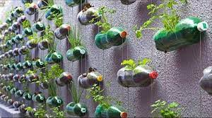

xddd
Reutilizar
xd
Reutilizar: ¿Qué es? Ejemplos de Reutilizar
Entonces, la definición de reutilizar es toda actividad del hombre para evitar tirar a la basura
o desechar productos materiales que pueden volver a ser utilizados con mismos o diferentes fines para los que fue creado.
De esta forma, al reutilizar estamos dando un uso alternativo a los materiales que originalmente pensabamos tirar a la basura, ayudando así a reducir la basura y promoviendo las actividades de las erres
Podría pensarse que reutilizar una botella de plástico, una lata o un tapón de corcho no es una acción de mucha trascendencia. Sí que lo es. De hecho, ni te imaginas todo lo que podría conseguirse a nivel global si reutilizar cosas fuese una práctica extendida.

xddddddd
xd
Importancia de reutilizar
Al tirar objetos estamos creando toneladas de basura anualmente, también estamos tirando dinero, y a la vez tirando nuestro tiempo, pues tendremos que ir a otro supermercado, mal o shopping a comprar nuevos objetos. La cadena de «comprar, usar y tirar» es sin dudas una de las peores para el bosillo, el planeta y el tiempo del ser humano.
Debemos pensar seriamente en nuestra forma de comprar objetos, evaluar si realmente los precisamos, y generar nuevos hábitos de compra que estén de acuerdo a los principios que rigen la ecología.
Y cuando pensamos en la forma de reutilizar lo primero que debe venir a nuestra mente es cómo hacerlo en nuestro lugar inmediato en el que habitamos o estamos ahora mismo. Puede ser en tu casa, escuela, universidad o trabajo, en todos los lugares se puede reutilizar si usas tu imaginación.